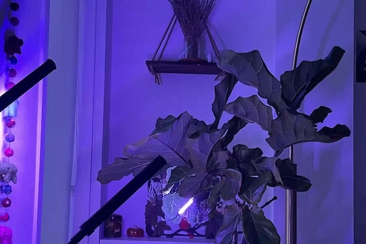
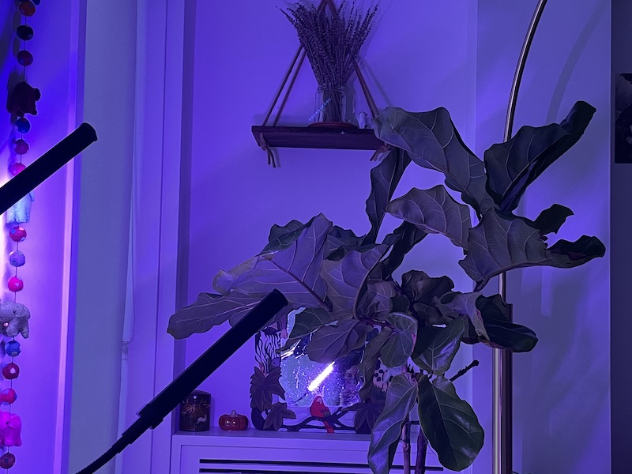
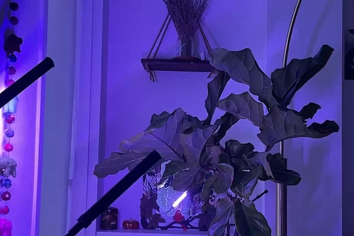
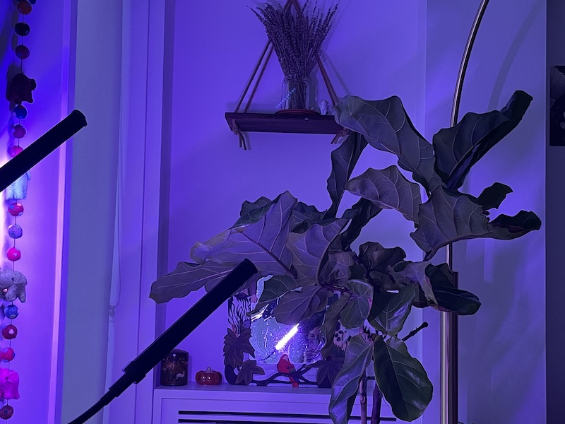
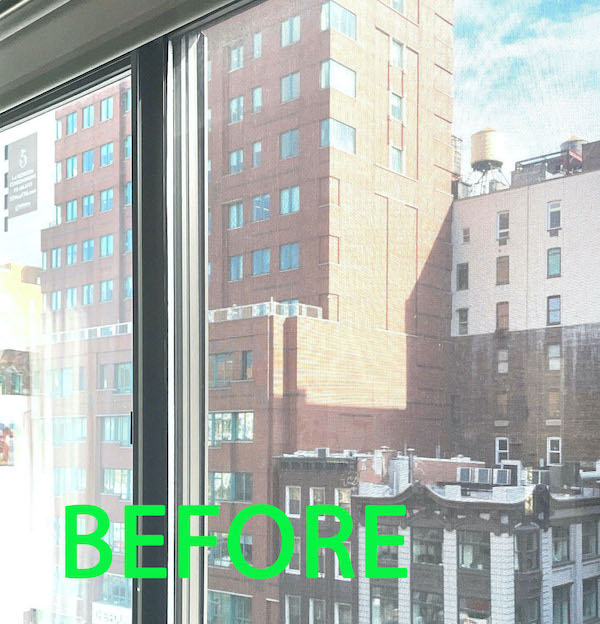
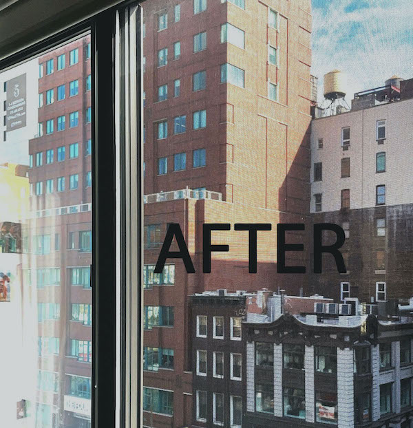

This assignment is a collection of the same photo cropped differently and at different resolutions.
 





This is for an assignment due Feb 23, 2021. Here are a few images edited in photoshop
Below are 2 pictures - one is overexposed, and one is fixed:  
This is the same idea but the image is under exposed:
Next is a banner:
Here is the 16:9 photo with the J&D logo layered over:
lastly is the creative photo edited for fun: